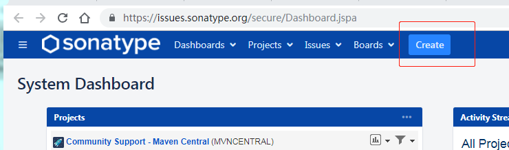
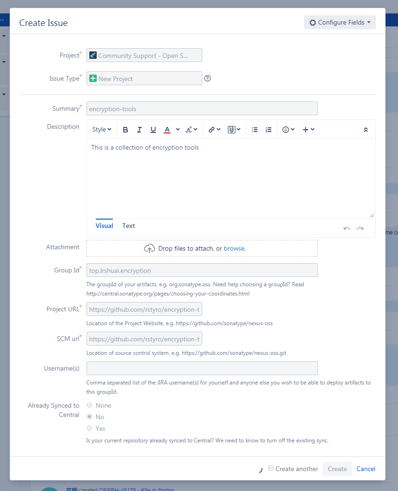
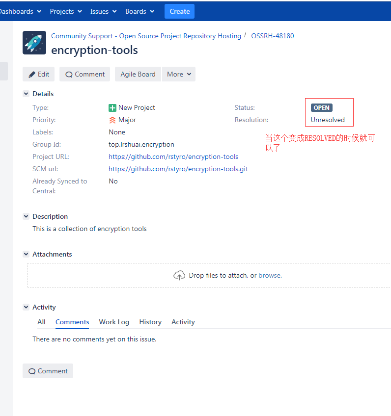
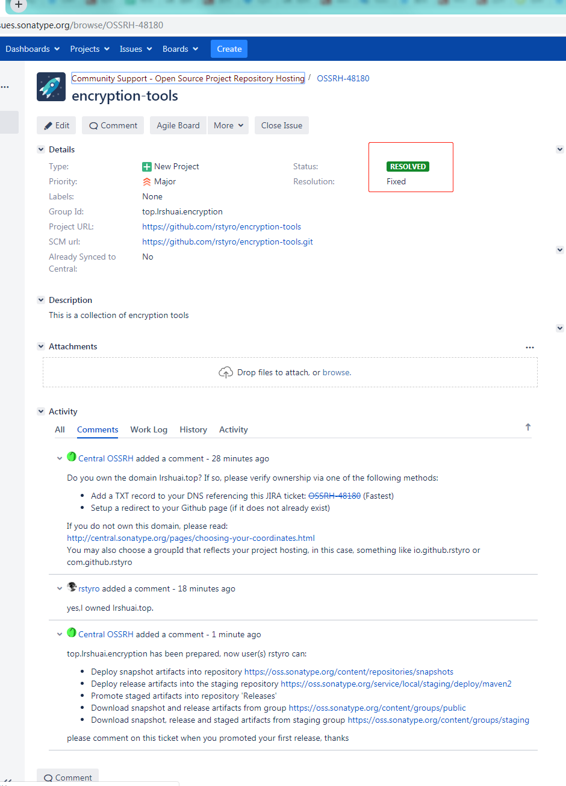
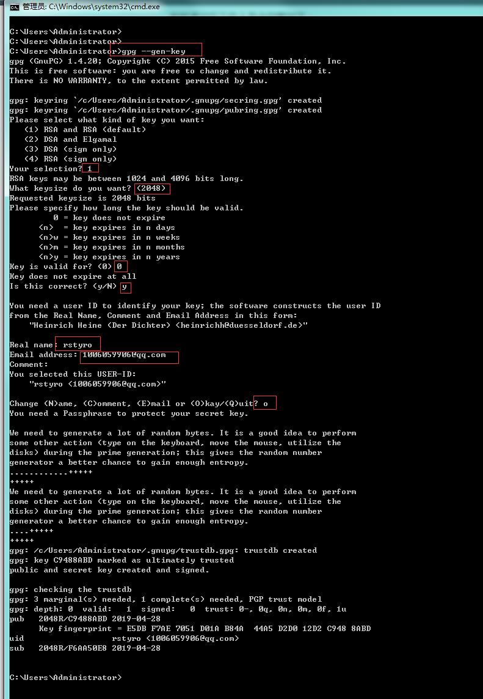
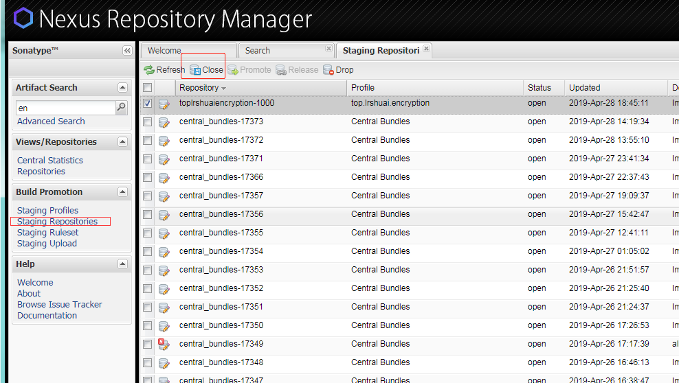
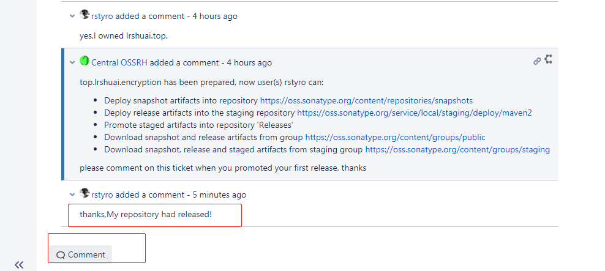
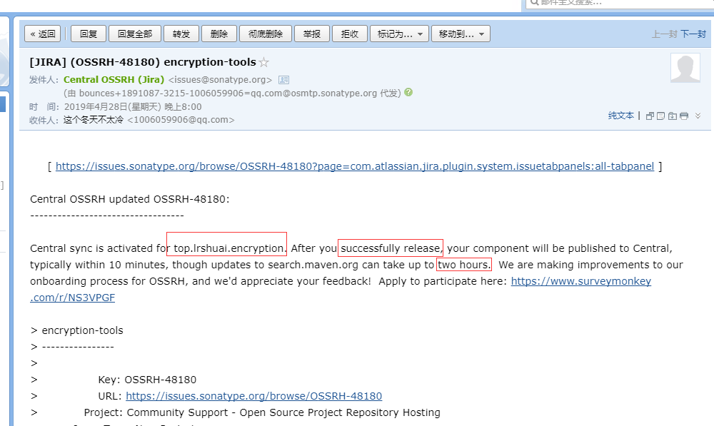

一、创建Sonatype账户
去这个地址注册一个账号：https://issues.sonatype.org/secure/Dashboard.jspa
二、创建一个Issues
登录Sonatype网站，创建一个Issues，直接点击Create按钮即可，如下图：

- project
选择Community Suport - Open Source Project Repository Hosting - Issue Type
这个选择New Project - Summary
选择项目名 - Description
项目描述 - Group Id
创建Maven项目的时候都有吧，这个是Maven为了区分组的唯一标识 - Project URL
开源项目的地址 - SCM url
开源项目的代码仓库地址，比如https://github.com/rstyro/encryption-tools.git
如下示例图：

三、等待工作人员审核
点击Issues 下面可看到，刚才创建的Issues,查看状态，如果状态变成RESOLVED即可下一步


如果你的
Group Id写的是你自己的域名，可能会有工作人员询问你是否是你自己的域名
如果是自己的域名，那就去服务器域名解析那，配置一条TXT 记录即可
如果不是，那建议你还是使用io.github.yourname或者com.github.yourname这样的Group Id.
四、PGP安装及生成密钥
- 一脸懵逼，PGP是什么鬼，干嘛用？
- 目的：是签名构建用的，为了保证你的构件不被第三方篡改，用于校验。
1、下载
- 去http://files.gpg4win.org/ 下载选（带vanilla的）
gpg4win-vanilla-2.3.4.exe - 快捷下载地址:http://files.gpg4win.org/gpg4win-vanilla-2.3.4.exe
2、安装
- 傻瓜式安装，选择你安装的位置，一路
next
3、生成密钥对
查询是否安装成功
gpg --version
生成密钥对
gpg --gen-key
步骤如下：
- Please select what kind of key you want:
选择加密方式，默认是 RSA 密钥对 - RSA keys may be between 1024 and 4096 bits long.
密钥对的长度 - Please specify how long the key should be valid.
密钥对的有效期 - Real name
姓名 - Email address
邮箱 - Comment
备注 - Change (N)ame, (C)omment, (E)mail or (O)kay/(Q)uit?
选择 O ，生成密钥对 - you need a passphrase to protect your secret key
输入一个密钥（secret）,要记住哦，后面有用到。
如果有默认值直接回车也可，或者调写括号内的值，示例图如下：

最后的打印输出：
gpg: /c/Users/Administrator/.gnupg/trustdb.gpg: trustdb created |
- 其中
C9488ABD就是公钥ID
4、将公钥发布到 PGP 密钥服务器
# 公钥发布PGP 密钥服务器 |
此后，可使用本地的私钥来对上传构件进行数字签名，而下载该构件的用户可通过上传的公钥来验证签名，也就是说，大家可以验证这个构件是否由本人上传的，因为有可能该构件被坏人给篡改了
五、修改Maven配置文件
1、settings.xml
- 该文件为Maven的配置文件，在Maven安装目录下的
conf文件夹下 - 修改 Maven
settings.xml文件，中的servers节点中添加<server>
<id>oss</id>
<username>Sonatype 用户名</username>
<password>Sonatype 密码</password>
</server>
2、pom.xml
修改pom文件
|
pom需要配置的属性：
- name: 项目名称。
- description: 项目描述。
- url: 项目地址
- licenses: 开源协议。
- developers: 开发者列表。
- scm: 项目的git地址相关。
- profiles: 配置不同的环境。比如开发环境 测试环境 发布环境。
- groupId: 定义当前maven项目隶属的实际项目。
- artifactId: 该元素定义实际项目中的一个Maven项目（模块）.
- version: 版本号, 带SNAPSHOT为快照版本，否则为 release 版本。
- build: 插件。需要加上maven-source-plugin、maven-javadoc-plugin、maven-gpg-plugin三个插件
- dependencies: 依赖的模块
六、发布控件
1、发布到OSS
进入到开源项目的根目录运行如下命令：
- 命令
mvn clean deploy -P release -Dgpg.passphrase=你的Passphase
你的Passphase：就是你在第四步，生成密钥对输入的secrt
注意：此时上传的构件并未正式发布到中央仓库中，只是部署到 OSS 中了，还没有真正的发布
2、在OSS发布到中央仓库
- 进入:https://oss.sonatype.org并登陆,点击左侧
Staging Repositories(暂存的存储库) 按钮 - 状态应该是
open，你要将其置为closed，点击上方的close按钮即可 - 接下来系统会自动验证有效性，如果你的Group Id和pom.xml没有错误，状态会自动变成closed
- 如果成功变成Closed 就可以发布了，点击
Release进行发布，ok
如果有问题，会在下面提示你那里有问题，加入有问题你可以点击
drop按钮删掉这个构件,然后重新发布
3、通知 Sonatype 构件已成功发布
- 在comment中回复你已经成功发布，比如：
My repository had released! - 在Issue下面回复一条“构件已成功发布”的评论，这是为了通知 Sonatype 的工作人员为需要发布的构件做审批，发布后会关闭该Issue。

4、等待审批
- 当审批通过后，将会收到邮件通知。然后去 maven的中央仓库中搜索到自己发布的构件，看是否存在
- 至此就结束了

七、升级控件
当修改完成之后，直接走 第六 步骤进行构建发布即可。